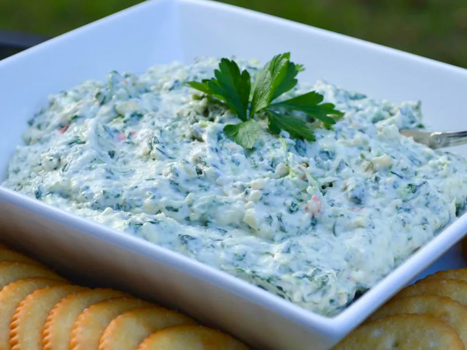

Spinach Artichoke Dip

Description
Spinach dip (sometimes casually spin dip) is a dip that uses the vegetable spinach as a primary ingredient. Frozen spinach is often used in its preparation. Slow cookers may be used to prepare the dip, and it may be served warm, or there may be no cooking involved. Additional primary ingredients include mayonnaise, cream cheese, sour cream and cheese. Examples of accompaniments to spinach dip include bread, crackers and chips.
The dip is commonly eaten as an hors d'oeuvre, appetizer, or party platter. Many casual restaurant chains offer spinach dip on their menus.
Ingredients
- 1 sweet onion, cut into quarters
- 8 cloves garlic, or more to taste
- 1 (14 ounce) can artichoke hearts, drained and chopped
- 1 (10 ounce) package frozen chopped spinach, thawed and drained
- 1 (8 ounce) package shredded Parmesan cheese
- 1 (1.4 ounce) package dry vegetable soup mix (such as Knorr®)
- 1 (8 ounce) package reduced-fat cream cheese, softened
- 1 cup reduced-fat mayonnaise
- 1 (8 ounce) container reduced-fat sour cream
Steps
- Blend onion and garlic in a food processor until finely chopped. Add artichoke hearts; process until chopped. Add spinach, Parmesan cheese, and vegetable soup mix; process until well incorporated. Transfer mixture to a nonmetallic bowl.
- Blend cream cheese, mayonnaise, and sour cream in the food processor until smooth; stir into artichoke mixture.